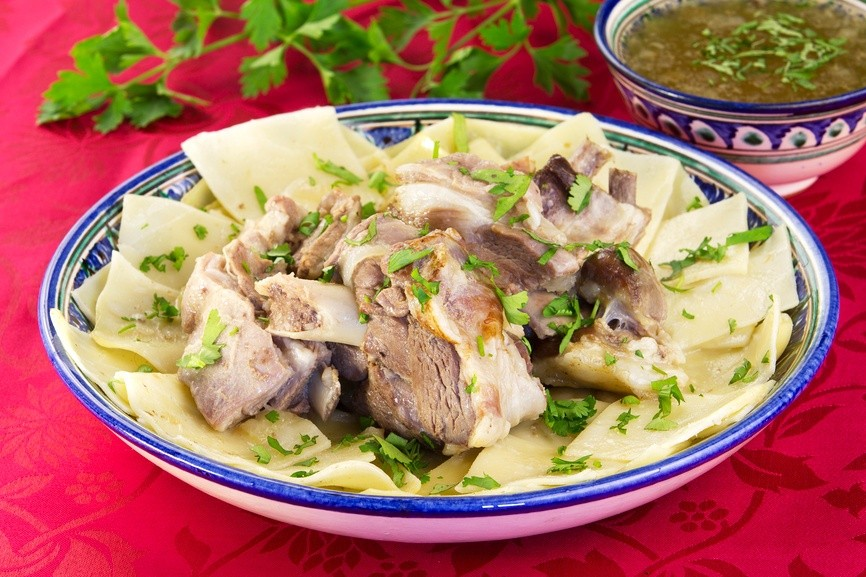
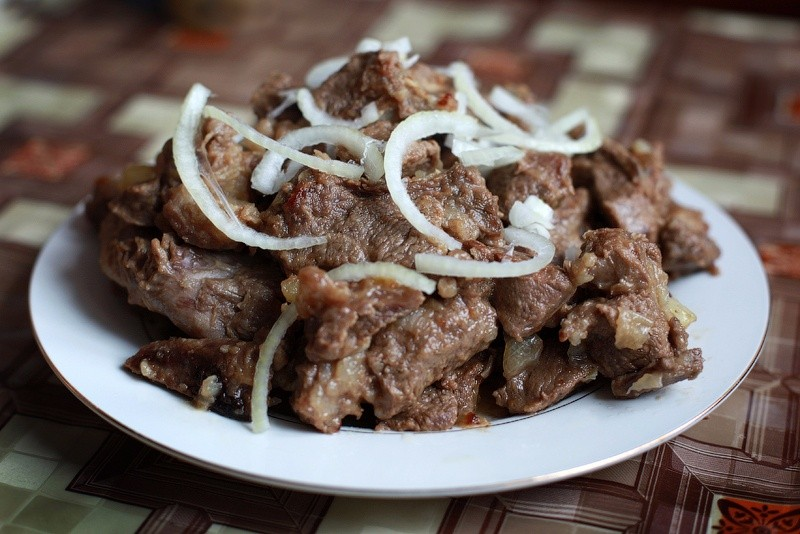
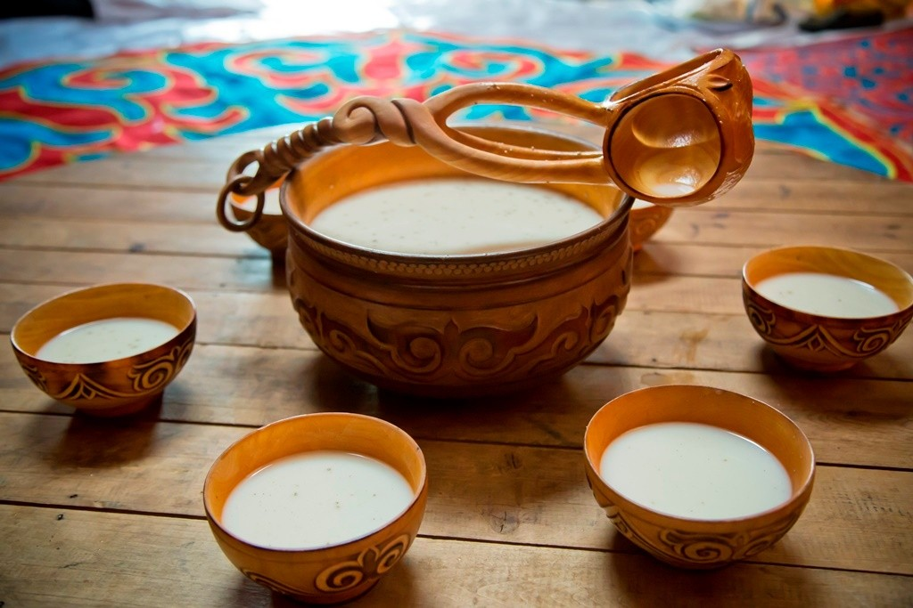
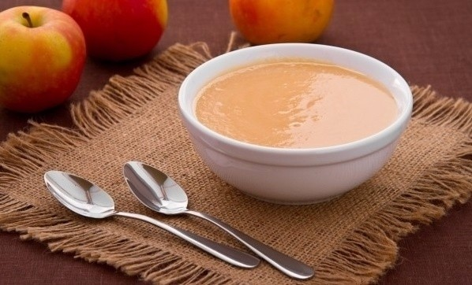
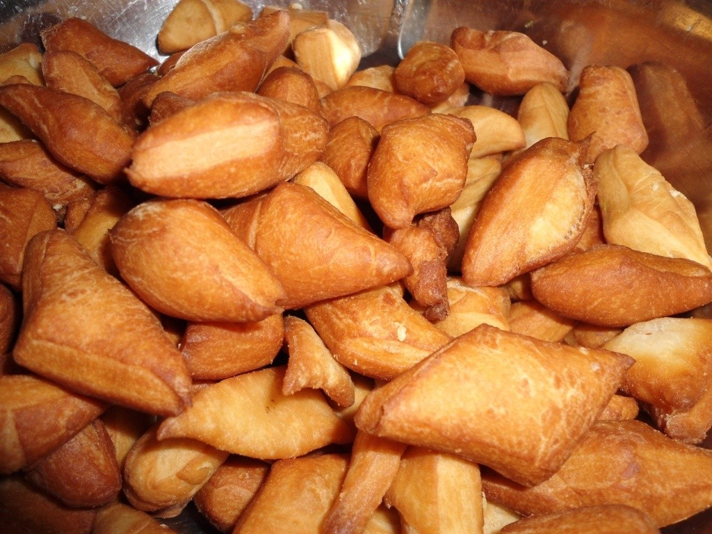

____
Традиционная еда
БЕШБАРМАК — Это одно из главных традиционных блюд Казахстана. Хотите ощутить себя дорогим гостем, почувствовать и понять философию кочевого народа – закажите бешбармак. Лучший вариант – если вам удастся отведать его на каком-либо празднике или торжестве.

КУЫРДАК — Это традиционное казахское жаркое из бараньих субпродуктов: печени, почек, сердца, жира. Также куырдак готовят и из говядины. Это блюдо с богатой историей – первые упоминания о нем относятся к XV веку.

ШУБАТ И КУМЫС — Казахская кухня славится напитками из кислого молока. Один глоток шубата или кумыса – и человек чувствует свежесть, прилив сил, готовность к подвигам.

БАЛКАЙМАК — Это национальная казахская сладость – томленые сливки, «медовая сметана». Рецепт приготовления передается в семье от матери к дочери, это блюдо занимает особое место на столе. Для приготовления необходимо на медленном огне томить сливки и понемногу добавлять небольшое количество муки и мёда.

БАУРСАКИ — Это мучное блюдо на вид напоминает пончики, изготавливается из пресного или дрожжевого теста и обжаривается во фритюре. Баурсаки можно подавать и к чаю, и шурпе – ни одно событие не обходится без них.

____